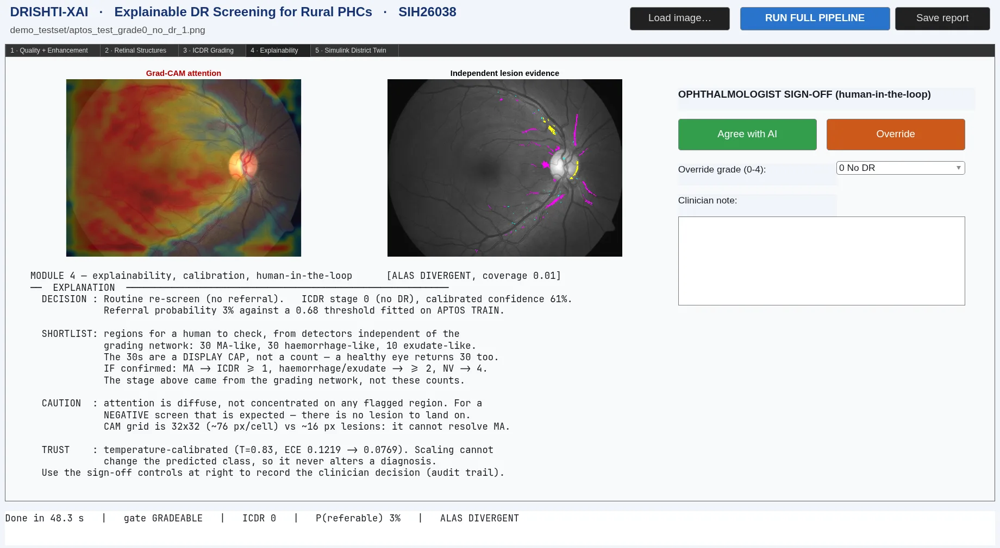

The server owns game rules and coordinates match state.
Codeforces submission checks connect programming progress to
gameplay, while reconnect handling keeps a match recoverable.
Public launch feedback informs iterations on the rules and
interface.
Experiments compare agent variants against scripted opponents
over seeded matches. The current evaluation is synthetic; human
play and broader generalization are not established.
The current focus is reproducible comparison against pinned
third-party baselines. Competitive strength, benchmark-server
conformance and public ladder performance have not been
evaluated.

Drishti-XAI
Research prototype
I built the MATLAB/Python prototype and evaluation pipeline for a
team diabetic-retinopathy research project.
MATLAB / Python / PyTorch / Simulink
What the evaluation showed
Strong internal results did not transfer to an external
population. Domain shift became the central evaluation lesson.
Source private
Evaluation and limitations
The current MATLAB pipeline reports sensitivity 0.908 and
specificity 0.877 on a sealed APTOS test split (733 images).
With its threshold unchanged on Messidor-2, sensitivity falls to
0.363, specificity is 0.865, and AUC is 0.666. These are
separate internal and external evaluations, not clinical
deployment evidence. The repository is private; this summary is
based on the project's current evaluation reports.
Quality gating, vessel/lesion analysis, calibration and Grad-CAM
support the workflow. Clinician assessment and clinical
validation remain open.
A Rust CLI that escalates deadline reminders through notifications, audio and desktop effects. Optional file-deletion consequences are disabled by default.
New installs use dry-run mode with deletion disabled. Path guards, blocklists and audit logs support explicitly configured enforcement. The broader extreme mode remains future scope.
Interactive DSA visualizations built through Openverse. Our team gave a lightning talk at OOSC 3.0 and presented the tool at T4E 2025, IIT Madras. Selected for OOSC 4.0.
An online judge built with a team at IIIT Kottayam. I worked on contest lifecycle, staff workflows, submission dispatch validation and per-test verdict persistence.
Team Hogorithm's trauma-support prototype, awarded Best Software at IEEE MACE .hack(); '26. I contributed Kotlin safety routing, domain models, UI and tests.
A team image-geolocation project using ResNet, quadtree geographic cells and transfer learning. Experiments compare data efficiency and adaptive cell methods.